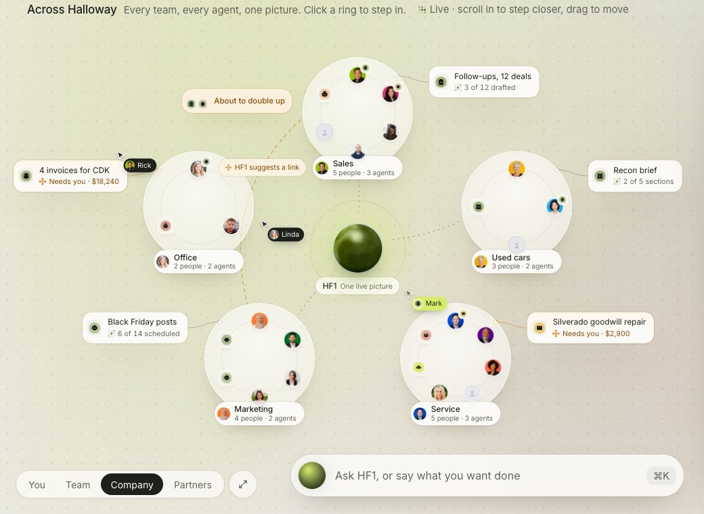
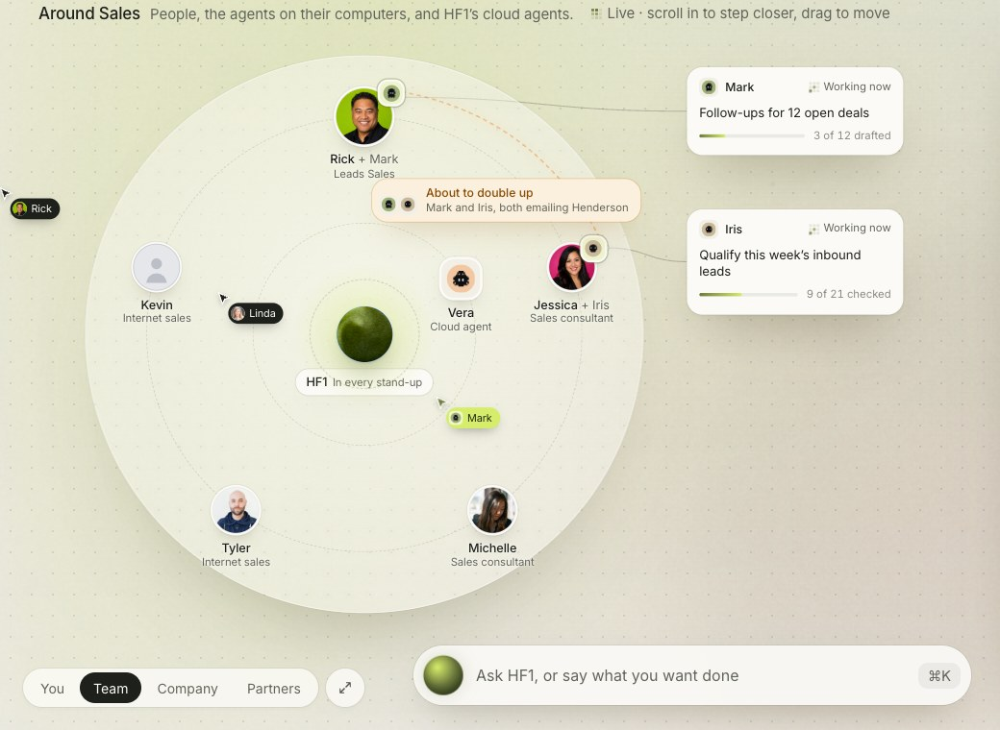
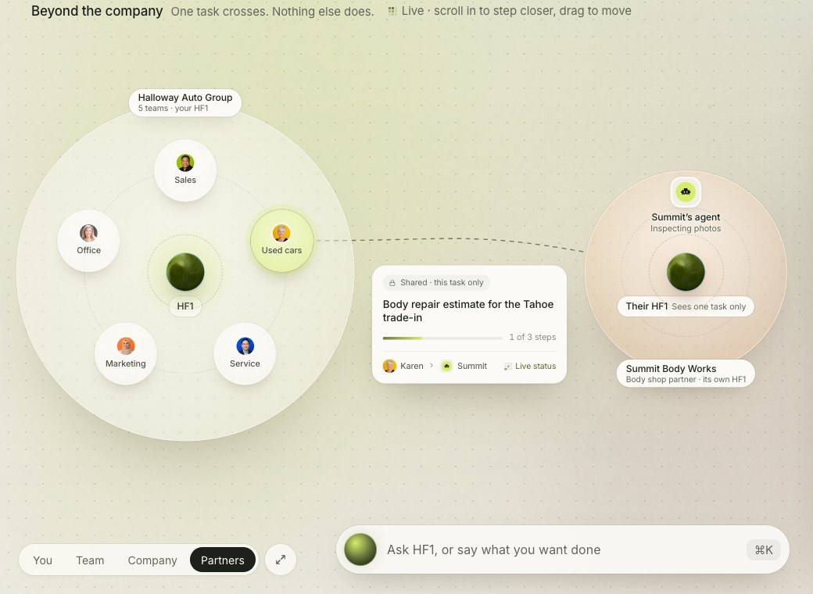
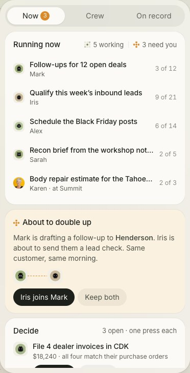
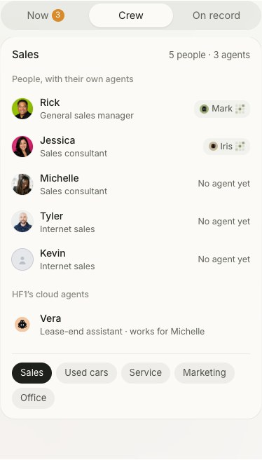
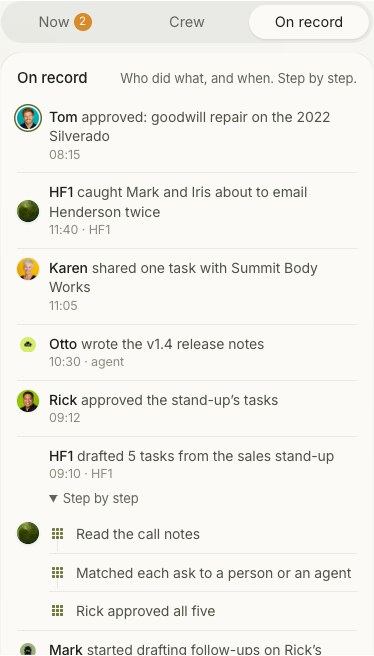
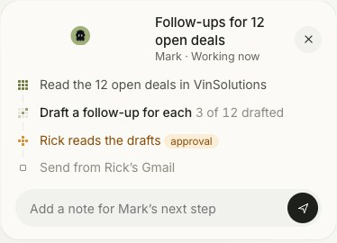
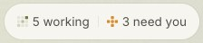
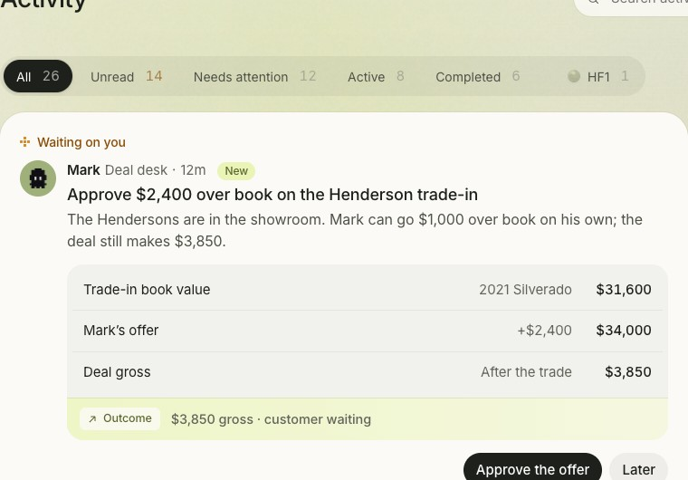
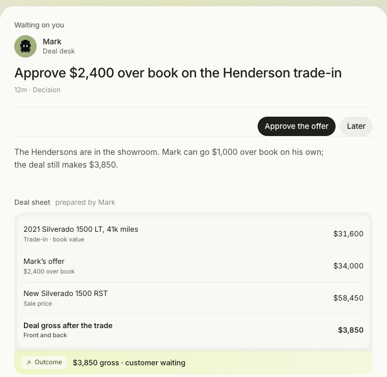

HF1 design system · source of truth · v2, 13 November
The team did the work. The interface shows only what’s yours.
01One thing in focusEach screen lifts one thing: a decision, a post, a person. The rest stays quiet.
02Words before widgetsStatus is a sentence or a dot, never a badge. Faces, not icons, for who did what.
03Warm, with textureBone ground, moss and lime light, grain you notice only up close. Cozy, never clinical.
Canvas
Live picture · one team in sync, agents included
The interactive canvas, in rings: you, the team, the company, a partner. Scroll or pinch to step between rings; click a ring to step in. People carry their own agents as small marks; HF1’s cloud agents sit on the inner ring. Live work shows as chips that tick on their own. Screens from the prototype, not redrawn.

Company. Every team as a ring around HF1. One chip per team, the one that matters most. Honey marks what needs a person; a dashed honey line is a link HF1 suggests.

Team. People on the outer ring with the agents on their computers; cloud agents inside; HF1 in the middle, in every stand-up.

Partners. The partner has its own HF1. One task crosses, marked “this task only”, and its status flows back live.

Now. Running now, the double-up catch, and decisions with one press each. Answers confirm, fold, and can be taken back.

Crew. A team is people, their own agents, and HF1’s cloud agents. One list, live status on each.

On record. Every task, agent run and approval, who and when, opening step by step.

Trail. Where an agent is in a task: done, working, waiting on approval, next. A note box steers its next step without stopping it.

Running now. Top bar, every screen. Opens the live picture. Pixel marks only, no pulsing dots.
From AffectUI, made ours
Flo Hoeller’s agent patterns, rebuilt in HF1’s language. Free ones are ported; Pro ones are rebuilt from the pattern until we license the kit.
HF1 nameAffectUI patternWhere it lives
Live pictureAgent graph, memory graphLive page, the rings canvas
CrewAgent crew, agent fleetCrew tab, team ring
TrailAgent trail, agent steeringSelected task, Activity live posts
DecideDecision inbox (free), approval gatesNow tab, Home queue
Double-up catchConflict radarCanvas and Now tab
CrossingAgent handoffPartner ring
On recordAgent ledgerOn record tab
PresenceAgent cursorsCanvas: people and agents moving
Running nowRunning nowTop bar
Tokens
Colour · moss and bone
Bone#EDEBE4 · ground
Cream glass#FBFAF6 82% · cards
WellInk 4.5% · previews, fields
Ink#1E211B · text, primary
Ink 2#4E5247 · body
Ink 3#62655A · labels 4.8:1
Moss#3E4A2C · brand tiles
Olive#6E7B3E · fills, mesh, charts · #5D6930 when it carries words
Sage#A9B78D · mesh, quiet data
Lime#D6EC6B · running, highlights
Peach#F2C7A2 · mesh warmth
Clay#D9A08F · mesh, second series
Needs you · honey #D98A2B dot, #8A4B05 words. Only what waits on this person.
Running · lime with an olive ring. Only work happening now.
Gain · #376F31. Money or goals a decision moved. The only green.
No violet, no blue, no bright green. The HF1 orb and real tool logos are the only exceptions. Every coloured word clears 4.5:1 on cream.
Rules
Radius, outcome, live, headers
Corner radius: nested = outer − padding
Anything inside a rounded container takes the container's radius minus the space between them. Never repeat the same radius inside.
Every core page: title on the left at 28px, actions on the same row on the right. Content that scrolls or pans under it fades out between 120 and 164px, so nothing ever overlaps the title.
Live status
The live mark: a steady centre with a ripple going out. Only for work happening right now. It replaces the green dot.

Outcome strip. Any post with a business result shows it in a lime strip attached under the preview, with the same label, everywhere. The task it came from sits on the left of the actions.

Activity page. One card, the same order every time: context, who (opens their page), title, task, actions, summary, preview with its outcome, then the record.
Components
Pixel mark · our status sign
A 3×3 grid of soft squares replaces every dot, halo and spinner. Moving patterns mean something is running; still patterns mean a state. It is the loader, the thinking sign and the needs-you mark, and later its own generator.
Thinking HF1 and agents at work
Scanning reading, checking
Making building a widget or flow
Needs you static, never pulses
Done a finished run
Checking with your agentsActivity Sizes 11 (nav), 13 (rows), 16 (loader). No other dots pulse.
Tokens
Brand tokens · moss is the default
Each company will bring its own palette. Everything coloured reads eight brand tokens; the HF1 orb, grounds, pixel mark, charts and accents follow them. Ink, bone and the needs-you honey stay fixed so meaning never changes. No UI for this yet.
Set data-brand="harbor" on the page root to preview. Text tokens must still clear 4.5:1 on cream.
Tokens
Grounds · shade, grain, wash
Every background comes from HF1 Grounds (claude.ai/artifact/EY11zmfN5oPKN2fLuTbDs8). These are real renders from the tool, not redrawings: build a ground there, copy its recipe, and export the PNG or run the same recipe in code. They replace the old mesh and grain backgrounds.
Phosphor only where a word won’t fit (phone navigation, search, “…”). Tools always show their real logo in its own colour. People and agents show their faces.
Home · on
Activity
Tasks
Workflows
People
Agents
Files
Search
Components
Actions
Buttons · pills · primary is ink
52 for decisions, 40 for page actions. Lime is spent once per screen, on the one creative action (Add a widget, New flow with HF1). Secondary left, primary right, bottom-right of what they act on.
HF1 ask bar · the one place to talk to HF1
What needs me?How did we do overnight?Who’s stuck?
Fixed bottom centre on every page. Suggestions rise above it when it opens, written for the page you’re on.
Components
Navigation and choice
Top line · a floating pill of words; the current page is an ink pill
HallowayTH
Seven words. Tools, Organization and Settings live under More. On a phone the pill becomes a bottom dock of icons above the ask bar.
View switch
BoardListTimelineCanvas
Filters · count after the word
All 26Needs you 12Running 8Done 6
SwitchAsk before sending
Components
Who, and what state
Faces · round · 28 rows · 40 cards · 96 profiles
LK
Agents keep their pixel face, now on warm tones from the palette (moss, sage, peach, clay, honey). People keep their photo. HF1 is always the orb.
Status · a dot and a word, never a badge
Running
Needs you
Paused · waiting for CDK
Done
Queue position · dots beside the stack, never “1 of 8” in the card.
Components
Data · shadcn charts, restyled
Chart shapes follow shadcn/ui charts (area, bar, radial, sparkline): no grid boxes, one dashed baseline, the value on hover in a cream tooltip. Series colours in order: moss, sage, clay, honey. The number is always bigger than the chart.
Gross profit, NovemberMonthQuarter
$1.41M+$3,850 today
Chevrolet · SaginawToyota · Bay City
Cars sold this weekBest day: Saturday, 25 cars
78%
Gross profitof $1.80M plan · 11 days left
Components
Living details · from React Bits
Free React Bits pieces, recoloured to moss and bone, each used in one place only. Every one stops under reduced motion.
Count Up · goals and gains+$3,850Counts from the old value to the new in 600ms after you approve.
Shiny Text · HF1 thinkingReading 14 repair orders…Only while an agent or HF1 is working; stops the moment it’s done.
Spotlight Card · widgets on hoverA soft lime light follows the pointerWidgets and tiles only, never the decision card.
Stack · the decision queue
Drag right to approve, left to send back
Animated List · Happening now
Iris is replying to 3 leads
Otto is reading repair orders
Linda is checking titles
Dock · phone navigation
Icons grow slightly under the finger. Phone only.
Components
Working states · from AffectUI
Free AffectUI “clean” pieces, ported to plain JS and recoloured: blue becomes olive, white becomes cream, edges stay hairline shadows. Olive means something is running; amber still only means it needs you.
Thinking Loader · HF1 at workChecking with your agentsEight rays fade in turn; the label rolls Thinking → Reading what’s on screen → Checking with your agents → Writing it up.
Badge · live dot
RunningNeeds youOff
Only a running dot breathes. A dot that needs you holds still.
Segmented Control · sliding thumb
BoardListTimeline
The thumb glides 420ms to the new choice. Same thumb in ink on the main nav.
Notification Stack · after you act
✓Rick has the follow-up for Thursday×
Front card reads, the rest peek above it. Leaves to the right after 4s.
Tooltip · controls without words
Search or jump to
450ms wait, then neighbours open at once.
Empty State
Nothing here
Empty columns, feeds and lists.
Skeleton · a widget being built
Bone bars, one sheen. The step being built in onboarding shows the eight rays; done steps tick in moss.
Fields · one well
For example: Lease-end assistant
Ask for a change or a question
No borders. Focus rings the field's shape, never a box on the input inside it.
Rules
Where the frame steps back
Full-screen views File preview and widget details bring their own back and close. The top nav and ask bar hide while one is open.
Threads A post with its own composer hides the ask bar. One place to type, never two.
Maps People, agents, org and task maps keep the small canvas type (12px) so nodes never overlap. Zoom is the reading size.
HF1 beside the page A cream card rising above the ask bar. Talking to an agent opens top right. Full view is a bone room, orb left.
Side panels 380px, start under the page toolbar so Test, Publish and New stay reachable.
Tables on phone Keep the name and the one column that says what's happening. Everything else lives in the details panel.
Components
Cards · one anatomy
Who (face, name, what they want) · “…” top right · title · subtitle · preview in a well · actions bottom right. Smaller cards drop parts from the bottom up, never reorder.
MarkNeeds your OK · waiting 6 min
Approve $2,400 over book on the Henderson trade-in
The Hendersons are in the showroom. It’s $1,400 past Mark’s limit, and the deal still makes $3,850.
2021 Silverado, book value$31,600
Mark’s offer +$2,400$34,000
+$3,850 gross profit
OttoRepair orders · 12 min ago
Running
Wrote 9 repair summaries for customersSent to Marcus to check before they go out tonight.
Post · Activity
SLS-14
Follow up 23 showroom visitors who didn’t buyIts flow is waiting on youTask · board and lists
Components
Rows, panels and states
WorkflowStateLast 7 daysRuns
Trade-in offersNeeds you38
Internet lead repliesRunning212
List row · 56 tall · hairlines between, never boxes · face first · a sparkline where a trend helps
All clear for today.You made 8 calls in 4 minutes. HF1 brings the next one when it’s yours.Empty · what happened, what comes next
Loading · the shape of what’s coming, after 200ms
GM GlobalConnect signed outMike, Otto and 2 workflows are paused until you sign in again.Broken connection · who is blocked, one action